Personajes |
Imagen |
Habilidad 1 |
Habilidad 2 |
Habilidad 3 |
Habilidad 4 |
|---|---|---|---|---|---|
Jett |
 |
Q: RÁFAGA ASCENDENTEPropulsa a Jett hacia el aire AL INSTANTE. |
E: IMPULSO CICLÓNPropulsa AL INSTANTE a Jett hacia la dirección a la que se dirige. Si no se está moviendo, se propulsará hacia adelante. |
C: NUBE EXPLOSIVALanza un proyectil AL INSTANTE que se convierte en una nube que bloquea la visión al impactar alguna superficie. MANTÉN PRESIONADA la tecla de la habilidad para cambiar la trayectoria del humo hacia donde apuntes. |
X: TORMENTA DE CUCHILLASEQUIPA un conjunto de cuchillos de gran precisión que se recargan al asesinar a un oponente. DISPARA para lanzar un cuchillo hacia tu objetivo y usa el DISPARO SECUNDARIO para lanzar todos los cuchillos restantes. |
Raze |
 |
Q: PAQUETE EXPLOSIVOLanza AL INSTANTE un Paquete Explosivo que se adhiere a las superficies. VUELVE A USAR la habilidad después de desplegar el paquete para detonarlo, lo que dañará y desplazará todo a su alcance. Raze no recibe daño por esta habilidad, pero sí sufrirá daño por caídas si salta muy alto. |
E: CARCASAS DE PINTURAuna granada de racimo y DISPARA para lanzarla. La granada infligirá daño por su cuenta y creará submuniciones que también infligirán daño a cualquiera que se encuentre dentro de su alcance. |
C: BUMBOTEQUIPA un Bumbot y DISPARA para desplegarlo. El bot se moverá en línea recta por el suelo y rebotará en los muros. El Bumbot marcará a cualquier enemigo que se encuentre en un cono frente a él y lo perseguirá. Si lo alcanza, explotará e infligirá daño masivo. |
X: TUMBADIVASun lanzamisiles. DISPARA para lanzar un misil que inflige daño de área masivo al entrar en contacto con algo. |
Breach |
 |
Q: FULGOREQUIPA una carga cegadora y DISPARA para lanzar una ráfaga de acción rápida a través de una pared. La carga detonará y cegará a todos los jugadores que la vean. |
E: FALLA SÍSMICAEQUIPA un rayo sísmico y MANTÉN PRESIONADO EL BOTÓN DE DISPARO para aumentar la distancia. SUÉLTALO para iniciar el temblor y aturdir a todos los jugadores que estén en la zona. |
C: RÉPLICAEQUIPA una carga de fusión y DISPARA para lanzar una ráfaga de acción lenta a través de una pared. La ráfaga infligirá daño masivo a todos los que estén en su alcance. |
X: TRUENO RODANTEEQUIPA una carga sísmica y DISPARA para enviar un temblor en cascada por una gran zona cónica. El temblor aturde y lanza por el aire a todos los que impacta. |
Omen |
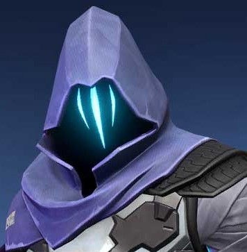 |
Q: PARANOIALanza un proyectil de sombras que reduce el alcance de visión de todos los jugadores a los que alcanza durante un breve periodo. Este proyectil puede atravesar paredes. |
E: MANTO OSCUROEQUIPA un orbe de sombras y mira su indicador de alcance. DISPARA para lanzarlo hacia la ubicación marcada. El orbe creará una esfera de sombras de larga duración que bloquea la visión. MANTÉN PRESIONADO EL BOTÓN DE DISPARO SECUNDARIO mientras apuntas para alejar el marcador. MANTÉN PRESIONADA la tecla de la habilidad mientras apuntas para acercar el marcador. |
C: PASO SOMBRÍOEQUIPA la habilidad Paso Sombrío y mira su indicador de alcance. DISPARA para comenzar una breve canalización y luego teletranspórtate hacia la ubicación marcada. |
X: DESDE LAS SOMBRASEQUIPA un mapa estratégico. DISPARA para empezar a teletransportarte hacia la ubicación seleccionada. Mientras te teletransportas, Omen lucirá como una sombra que los enemigos podrán destruir para cancelar su teletransportación. |
Brimstone |
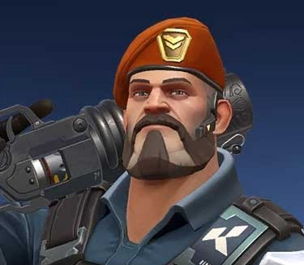 |
Q: LA INCENDIARIAEQUIPA un lanzagranadas incendiario y DISPARA para lanzar una granada que explota cuando se detiene en el suelo. Esta crea una zona de fuego que permanece en el campo y daña a los enemigos que estén dentro de ella. |
E: HUMO CELESTIALEQUIPA un mapa estratégico y DISPARA para marcar las ubicaciones en las que caerán las nubes de humo de Brimstone. Usa el DISPARO SECUNDARIO para confirmar y lanzar nubes de humo de larga duración que bloquearán la visión en la zona seleccionada. |
C: BALIZA POTENCIADORAEQUIPA una baliza potenciadora y DISPARA para lanzarla frente a Brimstone. Al caer, Resguardo Potenciador creará un campo que aumenta la velocidad de disparo de los jugadores. |
X: ATAQUE ORBITALEQUIPA un mapa estratégico y DISPARA para lanzar un ataque orbital prolongado de un láser en la ubicación seleccionada. Este infligirá daño masivo con el tiempo a los jugadores que estén en la zona. |
Phoenix |
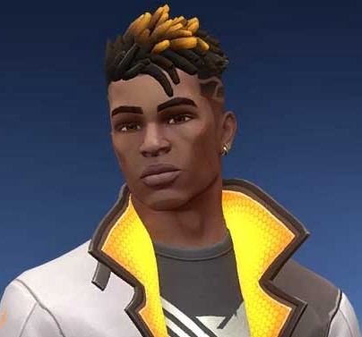 |
Q: DESTELLO EN CURVAEEQUIPA un orbe cegador que recorre una trayectoria curva y detona poco después de lanzarlo. DISPARA para cambiar la trayectoria del orbe cegador hacia la izquierda. Este detonará y cegará a cualquier jugador que lo vea. Usa el DISPARO SECUNDARIO para cambiar su trayectoria hacia la derecha. |
E: MANITAS CALIENTESEQUIPA una bola de fuego y DISPARA para lanzarla. Esta explotará tras cierto tiempo o al impactar el suelo, lo que creará una zona de fuego que permanecerá en el campo y dañará a los enemigos. |
C: MURO ABRASADOREQUIPA un muro de fuego y DISPARA para crear una hilera de llamas que avanza, lo que creará un muro que bloquea la visión y dañará a los jugadores que lo atraviesen. MANTÉN PRESIONADO EL BOTÓN DE DISPARO para mover el muro en la dirección de tu retícula. |
X: VA DE FUEGOColoca al INSTANTE un marcador en la ubicación de Phoenix. Cuando esta habilidad esté activa, morir o dejar que el temporizador expire hará que la habilidad se termine y regresará a Phoenix a esa ubicación con toda su vida. |
Sage |
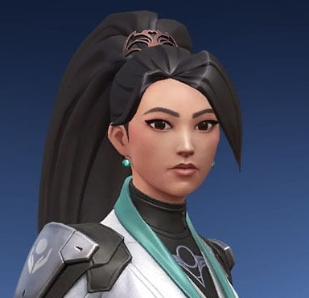 |
Q: ORBE RALENTIZADOREQUIPA un orbe de ralentización y DISPARA para lanzarlo. Este detonará al caer al suelo y creará un campo que permanecerá en la zona y ralentizará a los jugadores que estén dentro de él. |
E: ORBE CURATIVOEQUIPA un orbe curativo y DISPARA tras apuntar a un aliado herido para curarlo con el tiempo. Usa el DISPARO SECUNDARIO cuando Sage esté herida para curarla con el tiempo. |
C: ORBE DE BARRERAEQUIPA un orbe de barrera. DISPARA para colocar una pared sólida. Usa el DISPARO SECUNDARIO para rotarla antes de crearla. |
X: RESURRECCIÓNEQUIPA una habilidad de resurrección y DISPARA mientras apuntas hacia un aliado muerto para comenzar a resucitarlo. Tras un breve periodo de canalización, el aliado revivirá con toda su vida. |
sova |
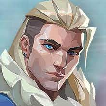 |
Q: PROYECTIL ELÉCTRICOEQUIPA un arco con un proyectil eléctrico y DISPARA para lanzarlo. El proyectil detonará al impactar y dañará a los jugadores cercanos. MANTÉN PRESIONADO EL BOTÓN DE DISPARO para aumentar el alcance del proyectil. Usa el DISPARO SECUNDARIO para añadir hasta dos rebotes a su trayectoria. |
E: PROYECTIL RASTREADOREQUIPA un arco con un proyectil rastreador y DISPARA para lanzarlo. El proyectil se activará al impactar y revelará la ubicación de los enemigos cercanos que estén dentro de su alcance. MANTÉN PRESIONADO EL BOTÓN DE DISPARO para aumentar el alcance del proyectil. Usa el DISPARO SECUNDARIO para añadir hasta dos rebotes a la trayectoria de la flecha. |
C: DRON BÚHOEQUIPA un dron búho y DISPARA para desplegarlo y controlar su movimiento. Mientras lo controlas, DISPARA para lanzar un dardo marcador que revelará la ubicación de cualquier jugador al que impacte. |
X: FURIA DEL CAZADOREQUIPA un arco con tres ráfagas de energía de largo alcance que atraviesan las paredes. DISPARA para lanzar una ráfaga de energía frente a Sova que infligirá daño y revelará la ubicación de los enemigos impactados. Puedes VOLVER A USAR esta habilidad hasta dos veces más mientras su contador esté activo. |
Viper |
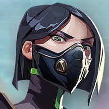 |
Q: NUBE VENENOSAEQUIPA un emisor de gas y DISPARA para lanzarlo. Este permanecerá ahí durante toda la ronda. VUELVE A USAR la habilidad para crear una nube de gas tóxica que usa combustible. Puedes VOLVER A USAR esta habilidad varias veces y puedes recuperarla para VOLVER A DESPLEGARLA. |
E: CORTINA TÓXICAEQUIPA un lanzador de gas y DISPARA para desplegar una larga hilera de emisores de gas. VUELVE A USAR la habilidad para crear un muro de gas tóxico que usa combustible. Puedes VOLVER A USAR esta habilidad varias veces. |
C: MORDEDURAEQUIPA un lanzador de químicos. DISPARA para lanzar un contenedor que se rompe al impactar contra el suelo. Este crea una zona química que permanece en el campo, la cual daña y ralentiza a los enemigos. |
X: FOSA VIPÉREAEQUIPA un rociador y DISPARA para lanzar una nube de químicos en todas las direcciones alrededor de Viper, lo que crea una gran nube que reduce el alcance de visión y la vida máxima de los jugadores que estén dentro de ella |
Cypher |
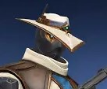 |
Q: CIBERJAULALanza AL INSTANTE una ciberjaula frente a Cypher. Actívala para crear una zona que bloquea la visión y ralentiza a los enemigos que la atraviesan. |
E: CÁMARA ESPÍAEQUIPA una cámara espía. DISPARA para colocarla en la ubicación seleccionada. VUELVE A USAR esta habilidad para tomar el control de la vista de la cámara. Mientras la controlas, DISPARA para lanzar un dardo marcador que revelará la ubicación de cualquier jugador al que impacte. |
C: CABLE TRAMPAEQUIPA un cable trampa. DISPARA para colocar un cable trampa destructible y camuflado en la ubicación seleccionada que creará una línea entre ese lugar y la pared opuesta. Los jugadores enemigos que activen el cable trampa quedarán atados, revelados y aturdidos tras un momento si no destruyen el dispositivo a tiempo. Puedes recogerlo y VOLVER A COLOCARLO. |
X: ASALTO NEURALApunta hacia un jugador enemigo muerto y úsalo DE INMEDIATO para revelar la ubicación de todos los jugadores enemigos con vida. |
Reyna |
 |
Q: DEVORARLos enemigos eliminados por Reyna dejan orbes de almas que duran 3 seg. Consume al INSTANTE un orbe de almas cercano y la cura rápidamente durante un breve momento. La Vida superior a 100 que obtenga mediante esta habilidad se deteriorará con el tiempo. Si LA EMPERATRIZ está activa, lanzará automáticamente esta habilidad sin consumir el orbe. |
E: DESECHARConsume al INSTANTE un orbe de almas cercano para volverse intangible durante un breve momento. También se vuelve invisible si LA EMPERATRIZ está activa. |
C: LA MIRADAEQUIPA un ojo destructible y etéreo. ACTÍVALO para lanzarlo a una corta distancia y todos los enemigos que lo vean se ofuscarán. |
X: LA EMPERATRIZEntra al INSTANTE en un frenesí, lo que aumenta considerablemente la velocidad de disparo, equipamiento y recarga. Al lograr un asesinato, se restablece la duración. |
Killjoy |
 |
Q: ALARMABOTEQUIPA un Alarmabot encubierto. DISPARA para desplegar un bot que caza a los enemigos que entren en su alcance. Después de alcanzar a su objetivo, el bot explota, lo que inflige daño y aplica Vulnerable. MANTÉN PRESIONADO EQUIPAR para recuperar un bot desplegado . |
E: TORRETAEQUIPA una Torreta. DISPARA para desplegar una torreta que les dispara a los enemigos cercanos en un cono de 180 grados. MANTÉN PRESIONADO EQUIPAR para recuperar una torreta desplegada. |
C: NANOPLAGAEQUIPA una granada de Nanoplaga. DISPARA para lanzar la granada. La Nanoplaga queda encubierta al aterrizar. ACTIVA Nanoplaga para desplegar un mortal enjambre de nanobots. |
X: DISPOSITIVO INMOVILIZADOREQUIPA el Dispositivo Inmovilizador. DISPARA para desplegar el dispositivo. Tras cargar, el dispositivo detiene a todos los enemigos dentro de su radio. Los enemigos pueden destruir el dispositivo. |
Skye |
 |
Q: FORJACAMINOSTE EQUIPAS un artefacto de tigre de Tasmania. DISPARA para enviar y tomar el control del depredador. Mientras lo controlas, DISPARA para saltar hacia adelante, lo que provoca una explosión contusiva e inflige daño a los enemigos alcanzados directamente. |
E: LUZ GUÍATE EQUIPAS un artefacto de halcón. DISPARA para enviarlo hacia adelante. MANTÉN PRESIONADO EL DISPARO para guiar al halcón en la dirección de tu retícula. REUTILÍZALA mientras el halcón está en vuelo para transformarlo en un destello que lanza un sonido de confirmación si un enemigo estaba dentro del alcance y campo visual. |
C: REGENERACIÓNTE EQUIPAS un artefacto de curación. MANTÉN PRESIONADO EL DISPARO para canalizar, lo que cura aliados dentro del alcance y campo visual. Se puede reutilizar hasta que se agote la energía de curación. Skye no puede curarse a sí misma. |
X: BUSCADORESTE EQUIPAS un artefacto de buscador. DISPARA para enviar tres buscadores a rastrear a los tres enemigos más cercanos. Si un buscador alcanza su objetivo, lo ofusca. |
Yoru |
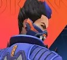 |
Q - PUNTO CIEGOEQUÍPALO para arrancar un fragmento dimensional inestable de la realidad. DISPARA para lanzar el fragmento, lo que activa un destello que termina una vez que choca con una superficie dura en el mundo. |
E: INFILTRACIÓNEQUÍPALO para usar un vínculo dimensional. DISPARA para lanzar el vínculo. Usa el DISPARO SECUNDARIO para colocar un vínculo en el lugar. ACTÍVALO para teletransportarte a la ubicación del vínculo.> |
C - ENGAÑOEQUIPA un eco que imita el sonido de pisadas cuando se activa. DISPARA para activarlo y enviar el eco hacia adelante. Usa el DISPARO SECUNDARIO para colocar un eco en el lugar. USA el eco inactivo para enviarlo hacia adelante. |
X - CAMBIO DIMENSIONALEQUIPA una máscara que puede ver entre dimensiones. DISPARA para viajar hacia la dimensión de Yoru, donde los enemigos no pueden afectarlo o verlo desde el exterior. |
Astra |
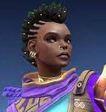 |
Q: PULSO ESTELARColoca estrellas en Modo Astral (X) ACTIVA una estrella para detonar un Pulso Estelar. El Pulso Estelar carga brevemente y luego ataca, lo que aturde a todos los jugadores en el área. |
E: NEBULOSAColoca estrellas en Modo Astral (X) ACTIVA una estrella para transformarla en una Nebulosa (humo). Usa (F) en una estrella para Disiparla, lo que devuelve la estrella para colocarla en una nueva ubicación después de un momento. Disipar forma una Nebulosa falsa brevemente en la ubicación de la estrella antes de regresar. |
C: POZO GRAVITACIONALColoca estrellas en Modo Astral (X) ACTIVA una estrella para formar un Pozo Gravitacional. Los jugadores en el área son atraídos hacia el centro antes de que estalle, lo que causa que todos los jugadores que aún siguen atrapados se vuelvan frágiles. |
X: MODO ASTRAL/DIVISIÓN CÓSMICAACTIVA (X) para entrar en Modo Astral donde puedes colocar estrellas con tu DISPARO PRINCIPAL. Puedes reactivar las estrellas más tarde, lo que las transforma en un Pulso Estelar, Nebulosa o Pozo Gravitacional. Cuando División Cósmica esté cargada, usa el DISPARO SECUNDARIO en Modo Astral para comenzar a apuntar, luego el DISPARO PRINCIPAL para elegir dos ubicaciones. Una División Cósmica infinita conecta los dos puntos que selecciones. División Cósmica bloquea las balas y amortigua considerablemente el audio. |
Kay/o |
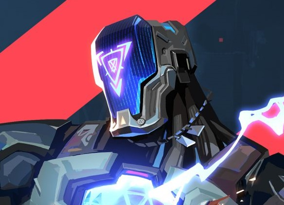 |
Q - MEMORIA/FLASHEQUIPA una granada cegadora. DISPARA para lanzarla. La granada cegadora explota después de un breve tiempo y ciega a todos en la línea de visión. |
E - PUNTO/CEROEQUIPA una cuchilla de supresión. DISPARA para lanzarla. La cuchilla se pega contra la primera superficie que toca, luego explota y suprime a cualquier oponente que se encuentre en el radio de la explosión. |
C - FRAG/MENTACIÓNEQUIPA un fragmento explosivo. DISPARA para lanzarlo. El fragmento se pega al piso y explota varias veces, lo que inflige daño casi mortal en el centro con cada explosión. |
X - NULL/CMDSe sobrecarga AL INSTANTE con energía de radianita polarizada que le da poder a KAY/O y causa que grandes pulsos de energía emanen desde su ubicación. Los enemigos impactados por dichos pulsos quedan suprimidos durante un breve momento. |
Chamber |
Q - CAZADOR DE CABEZASACTÍVALA para equipar una pistola pesada. Presiona DISPARO SECUNDARIO con la pistola equipada para usar la mira. |
E - RENDEZVOUSCOLOCA dos teletransportadores. Mientras estés en el suelo y dentro de su zona de alcance, podrás REACTIVAR la habilidad para transportarte rápidamente al otro teletransportador. Puedes recogerlos para VOLVER A COLOCARLOS en otro lugar |
C - MARCA REGISTRADACOLOCA una trampa que escanea los alrededores buscando enemigos. Cuando un enemigo visible entra en contacto, esta comienza una cuenta regresiva que, al terminar, desestabiliza el terreno a su alrededor y crea un área que permanece en la zona y ralentiza a los enemigos dentro de ella. |
X - TOUR DE FORCEACTÍVALA para invocar un poderoso rifle de francotirador personalizado que mata a cualquier enemigo al que impacte directamente. Matar a un enemigo crea un área que permanece en la zona y ralentiza a los jugadores que queden dentro de ella. |
|
Neon |
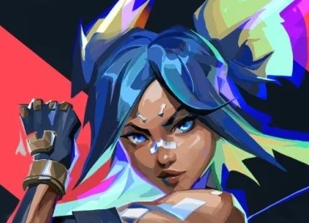 |
Q - ELECTRORREBOTELanza un rayo de energía INSTANTÁNEO que rebota una vez. Luego de golpear cada superficie, el rayo electrifica el terreno debajo, lo que provoca una explosión conmocionante. |
E - VELOCIDAD RELÁMPAGOCanaliza INSTANTÁNEAMENTE el poder de Neon para aumentar su velocidad. Al cargarse, utiliza el DISPARO SECUNDARIO para activar un deslizamiento eléctrico. La carga del deslizamiento se reinicia cada dos asesinatos. |
C - CARRIL RÁPIDODISPARA dos líneas de energía hacia adelante por el suelo que se extienden por una corta distancia o hasta golpear contra una superficie. Las líneas se convierten en paredes de electricidad estática que bloquean la visión y dañan a cualquier enemigo que quiera atravesarlas. |
X - POTENCIA MÁXIMADesata todo el poder y la velocidad de Neon por un tiempo corto. DISPARA para canalizar todo su poder en un rayo mortal con gran precisión de movimiento. La duración se reinicia con cada asesinato. |
Fade |
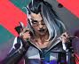 |
Q - CAPTURAREquipa un orbe de tinta de las pesadillas. DISPARA para lanzar el orbe, el cual caerá en picada al suelo después de un tiempo determinado. Al impactar contra el suelo, la tinta explotará y creará una zona en la que los enemigos que queden atrapados en ella no podrán escapar por medios normales. VUELVE A USAR la habilidad para dejar caer el proyectil anticipadamente mientras vuela. |
E - ATORMENTAREquipa una entidad de las pesadillas. DISPARA para lanzar el orbe, el cual caerá en picada al suelo después de un tiempo determinado. Al impactar contra el suelo, el orbe se convertirá en un ente de las pesadillas que revelará la ubicación de los enemigos en su línea de visión. Los enemigos pueden destruir esta entidad. VUELVE A USAR la habilidad para dejar caer el proyectil anticipadamente mientras vuela. |
C - ACECHADORAEQUIPA una Acechadora. DISPARA para lanzar a la Acechadora, que viajará en línea recta. La Acechadora se enfocará en cualquier enemigo o rastro en su cono de visión frontal y lo perseguirá y ofuscará si lo alcanza. MANTÉN PRESIONADO el botón de DISPARO para guiar a la Acechadora en la dirección de tu retícula. |
X - ANOCHECEREQUIPA el poder del Miedo. DISPARA para lanzar una onda de energía de las pesadillas que puede atravesar paredes. La energía crea un rastro hacia el oponente, además de ensordecerlo y debilitarlo. |